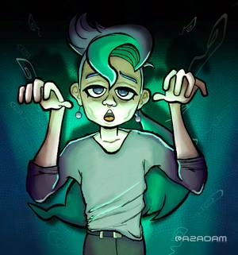
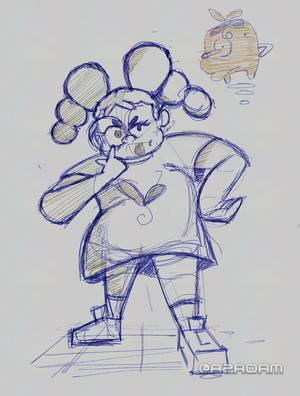
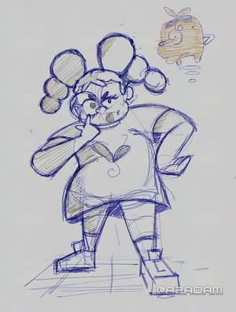

2025A rendered painting I made of my partner Jay Pastrana. Supposed to be Halloween themed, this was completed in late November. A commission from a friend who wanted his Sonic OC drawn, I opted to have it drawn in a style similar to Sonic Channel wallpapers.
A commission from a friend who wanted his Sonic OC drawn, I opted to have it drawn in a style similar to Sonic Channel wallpapers. A commission from a friend who wanted his Sonic OC drawn, I opted to have it drawn in a style similar to Sonic Channel wallpapers.A sketch of an original character of mine, design streamlined by Jay. She has a digital companion as well, a Yama.
A commission from a friend who wanted his Sonic OC drawn, I opted to have it drawn in a style similar to Sonic Channel wallpapers.A sketch of an original character of mine, design streamlined by Jay. She has a digital companion as well, a Yama.